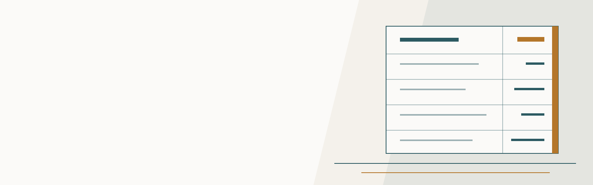

Цены
Прейскурант по направлениям
Всего позиций: 267
Общие виды работ
15 позицийВитальное окрашивание твердых тканей зуба
A12.07.00190₽за услугуОпределение индексов гигиены полости рта
A12.07.003410₽за услугуПроводниковая анестезия
B01.003.004.002440₽за услугуИнтралигаментарная анестезия
B01.003.004.003240₽за услугуАппликационная анестезия
B01.003.004.00480₽за услугуИнфильтрационная анестезия
B01.003.004.005350₽за услугуПрицельная внутриротовая контактная рентгенография
A06.07.003260₽за услугуЭлектроодонтометрия
A05.07.001710₽за услугуТермодиагностика зуба
A02.07.005180₽за услугуСошлифовывание твердых тканей зуба (избирательное пришлифовывание)
A16.07.082200₽за услугуСнятие постоянной пломбы
A16.07.091.01120₽за услугуТрепанация зуба, искусственной коронки
A16.07.092120₽за услугуНаложение Оптрагейта
A16.07.092.01590₽за услугуНаложение OptiDam
A16.07.092.02880₽за услугуСиликоновый ключ
A16.07.092.03590₽за услугу
Терапевтический приём
19 позицийПрием (осмотр, консультация, план лечения, индивидуальный набор Анти-ВИЧ) врача-стоматолога-терапевта первичный
B01.065.001530₽за услугуПрием первичный (осмотр, консультация, индивидуальный набор Анти-ВИЧ) врача-стоматолога К.М.Н., врача высшей категории, доцента медицинского университета
B01.065.001.011 180₽за услугуПрием повторный врача-стоматолога К.М.Н., врача высшей категории, доцента медицинского университета
B01.065.001.01590₽за услугуПрием (осмотр, консультация, план лечения) врача-стоматолога-терапевта первичный, чтение КЛКТ
B01.065.001.02710₽за услугуПрием (осмотр, индивидуальный набор Анти-ВИЧ) врача-стоматолога-терапевта повторный
B01.065.002470₽за услугуНаложение лечебной прокладки
A16.07.002120₽за услугуНаложение изолирующей прокладки
A16.07.002.01180₽за услугуНаложение матрицы
A16.07.002.02120₽за услугуЛечение кариеса с использованием стоматологических цементов
A16.07.002.032 240₽за услугуЛечение кариеса с использованием материалов химического отверждения
A16.07.002.042 240₽за услугуЛечение поверхностного кариеса с использованием фотополимеров
A16.07.002.052 480₽за услугуЛечение среднего кариеса с использованием фотополимеров
A16.07.002.063 420₽за услугуЛечение глубокого кариеса с использованием фотополимеров
A16.07.002.074 130₽за услугуВосстановление зуба (премоляр, моляр) фотополимерной пломбой, разрушение коронковой части зуба до 1/2
A16.07.002.094 250₽за услугуВосстановление зуба (фронтальная группа зубов) фотополимерной пломбой, разрушение коронковой части зуба до 1/2
A16.07.002.0114 370₽за услугуВосстановление зуба пломбировочными материалами с использованием штифтов (стекловолоконный штифт)
A16.07.0314 720₽за услугуВосстановление зуба пломбировочными материалами с использованием штифтов (стекловолоконный штифт) под коронку
A16.07.031.024 130₽за услугуЛечение кариеса с использованием бинокуляров
A16.07.002.012590₽за услугуНаложение временной пломбы
A16.07.002.009120₽за услугу
Эндодонтия
19 позицийКупирование острого состояния при пульпите, периодонтите
A11.07.027.011 180₽за услугуИнструментальная обработка корневого канала, обтурация (одноканальный)
A16.07.030.066 490₽за услугуИнструментальная обработка корневого канала, обтурация (двухканальный)
A16.07.030.077 080₽за услугуИнструментальная обработка корневого канала, обтурация (трехканальный)
A16.07.030.087 670₽за услугуИнструментальная обработка корневого канала (четырехканальный)
A16.07.030.097 910₽за услугуИнструментальная обработка корневого канала, обтурация (пятиканальный)
A16.07.030.0109 440₽за услугуМедикаментозная обработка одного корневого канала
A16.07.030.011240₽за услугуУльтразвуковое расширение корневого канала зуба
A22.07.004420₽за услугуИнструментальная обработка каналов, с применением бинокуляров
A22.07.005710₽за услугуПломбирование корневого канала зуба термопластифицированной гуттаперчей
A16.07.008590₽за услугуВременное пломбирование лекарственным препаратом корневого канала
A16.07.030.003200₽за услугуРаспломбировка корневого канала ранее леченного пастой
A16.07.082.001330₽за услугуРаспломбировка корневого канала ранее леченного фосфат-цементом
A16.07.082.002710₽за услугуРаспломбировка корневого канала ранее леченного резорцин-формалиновой пастой
A16.07.082.002470₽за услугуРаспломбировка корневого канала ранее запломбированного гуттаперчевыми штифтами
A16.07.082.003470₽за услугуРазработка корневого канала под штифтовкладку
A16.07.082.0041 180₽за услугуВнутриканальное отбеливание (1 канал)
A16.07.082.005830₽за услугуЗакрытие перфорации стенки корневого канала зуба
A16.07.008.003830₽за услугуУдаление внутриканального штифта/вкладки
A16.07.0941 770₽за услугу
Пародонтология
8 позицийОпределение пародонтальных индексов
A12.07.004650₽за услугуОдонтопародонтограмма
A02.07.009830₽за услугуВведение лекарственных препаратов в пародонтальный карман
A11.07.010180₽за услугуМедикаментозная обработка пародонтальных каналов
A11.07.010.01590₽за услугуАппликация лекарственного препарата на слизистую оболочку полости рта
A11.07.022300₽за услугуШинирование при заболеваниях пародонта (1 зуб)
A16.07.0191 300₽за услугуУдаление наддесневых и поддесневых зубных отложений в области зуба ручным методом
A16.07.020.001530₽за услугуЗакрытый кюретаж при заболеваниях пародонта в области 1 зуба
A16.07.039940₽за услугу
Хирургия
31 позицияПрием (осмотр, консультация, план лечения, индивидуальный набор Анти-ВИЧ) врача-стоматолога-хирурга первичный
B01.067.001470₽за услугуПрием (осмотр, консультация, индивидуальный набор Анти-ВИЧ) врача-стоматолога-хирурга первичный
B01.067.001.01350₽за услугуПрием (осмотр, индивидуальный набор Анти-ВИЧ) врача-стоматолога-хирурга повторный
B01.067.002470₽за услугуУдаление временного зуба
A16.07.001.0011 770₽за услугуУдаление постоянного зуба (простое)
A16.07.001.0022 360₽за услугуУдаление зуба сложное с разъединением корней
A16.07.001.0033 540₽за услугуОперация удаления ретинированного, дистопированного или сверхкомплектного зуба
A16.07.0244 720₽за услугуОперация удаления ретинированного (полуретинированного), дистопированного 8-го зуба с выкраиванием слизисто-надкостничного лоскута и частичной резекцией кортикальной пластинки кости
A16.07.024.015 900₽за услугуВнутриротовой разрез
A16.07.024.02590₽за услугуНаложение шва на слизистую оболочку рта
A16.07.097590₽за услугуЛечение перикоронита (промывание, рассечение и/или иссечение капюшона)
A16.07.0581 770₽за услугуЛечение альвеолита
A16.07.058.011 770₽за услугуЦистэктомия с резекцией верхушки корня 1 зуба
A16.07.0168 260₽за услугуВскрытие подслизистого или поднадкостничного очага воспаления в полости рта
A16.07.0111 770₽за услугуВскрытие и дренирование пародонтального абсцесса
A16.07.0121 770₽за услугуГемисекция зуба
A16.07.0593 300₽за услугуУдаление экзостоза, хондромы
A16.03.0891 770₽за услугуВнутрикостная дентальная имплантация
A16.07.05436 340₽за услугуВнутрикостная дентальная имплантация (короткие имплантаты)
A16.07.05437 760₽за услугуВнутрикостная дентальная имплантация (с использованием навигационного шаблона)
A16.07.05441 300₽за услугуРаскрытие имплантата
A16.07.054.16 490₽за услугуПластика уздечки верхней губы
A16.07.0424 720₽за услугуПластика уздечки нижней губы
A16.07.0434 720₽за услугуПластика уздечки языка
A16.07.0444 720₽за услугуРассечение уздечки языка
A16.07.0451 770₽за услугуПластика преддверия полости рта (1 сегмент)
A16.07.465 900₽за услугуЛоскутная операция при пародонтите, 1 сегмент (от 3 до 6 зубов)
A16.07.0407 670₽за услугуКоронарно-радикулярная сепарация
A16.07.0601 180₽за услугуПроводниковая анестезия
B01.003.004.002440₽за услугуИнфильтрационная анестезия
B01.003.004.005350₽за услугуУдаление стенки зуба
A16.07.001.002.1940₽за услугу
Ортопедия
6 позицийПрием (осмотр, консультация, план лечения, индивидуальный набор Анти-ВИЧ) врача-стоматолога-ортопеда первичный
B01.066.001470₽за услугуПрием (осмотр, консультация, индивидуальный набор Анти-ВИЧ) врача-стоматолога-ортопеда первичный
B01.066.001.01350₽за услугуПрием (осмотр, индивидуальный набор Анти-ВИЧ) врача-стоматолога-ортопеда повторный
B01.066.002470₽за услугуСнятие оттиска с одной челюсти
A02.07.010.0011 180₽за услугуСнятие оттиска с одной челюсти (двухслойный)
A02.07.010.001.012 360₽за услугуСнятие оттиска с одной челюсти для изготовления силиконового ключа
A02.07.010.001.03590₽за услугу
Несъёмное протезирование
13 позицийВосстановление зуба коронкой временной прямым методом
A16.07.004.0011 180₽за услугуВосстановление зуба коронкой металлокерамической
A16.07.0048 850₽за услугуВосстановление зуба коронкой металлокерамической (лазерное спекание)
A16.07.00414 160₽за услугуВосстановление зуба коронкой металлокерамической с плечевой массой и индивидуальным воспроизведением эстетики на зубы в линии улыбки
A16.07.004.019 440₽за услугуВосстановление зуба коронкой безметалловой из диоксида циркония стандартная эстетика
A16.07.004.0218 880₽за услугуВосстановление зуба коронкой Emax (силикат лития)
A16.07.004.0223 600₽за услугуВосстановление зуба коронкой цельнометаллической
A16.07.004.049 440₽за услугуВосстановление зуба коронкой постоянной пластмассовой
A16.07.004.055 900₽за услугуВосстановление зуба коронкой с использованием цельнолитой культевой вкладки (простой)
A16.07.0335 900₽за услугуВосстановление зуба коронкой с использованием цельнолитой культевой вкладки (облицованной керамикой)
A16.07.033.018 260₽за услугуШтифтовкладка (оксид циркония)
A16.07.033.019 440₽за услугуВосстановление зуба вкладками, виниром, полукоронкой (Композит)
A16.07.0037 080₽за услугуВосстановление зуба вкладками, виниром, полукоронкой (Керамическая)
A16.07.003.0116 520₽за услугу
Съёмное протезирование
23 позицииПротезирование частичными съемными пластиночными протезами от 4-10 зубов (одна челюсть)
A16.07.03515 340₽за услугуПротезирование частичными съемными пластиночными протезами (одна челюсть, Базис ЧСПП от 4-10 зубов Acry-free)
A16.07.03529 500₽за услугуПротезирование частичными съемными пластиночными протезами (одна челюсть, Базис ЧСПП от 4-10 зубов Polyamid)
A16.07.03511 800₽за услугуКосметический протез 1-3 зубов
A16.07.03510 030₽за услугуКосметический протез 1-3 зубов Acry-free
A16.07.03514 870₽за услугуКосметический протез 1-3 зубов Polyamid
A16.07.03512 390₽за услугуПротезирование зубов полными съемными пластиночными протезами 11-14 зубов (одна челюсть Эконом)
A16.07.02318 290₽за услугуПротезирование зубов полными съемными пластиночными протезами 11-14 зубов (одна челюсть Стандарт)
A16.07.02319 470₽за услугуПротезирование зубов полными съемными пластиночными протезами 11-14 зубов (одна челюсть Премиум)
A16.07.02329 500₽за услугуПротезирование зубов полными съемными пластиночными протезами (ПСПП от 11-14 зубов Стандарт зубы Acry-free)
A16.07.02327 850₽за услугуПротезирование зубов полными съемными пластиночными протезами (ПСПП от 11-14 зубов Премиум зубы Acry-free)
A16.07.02353 100₽за услугуПротезирование зубов полными съемными пластиночными протезами (ПСПП от 11-14 зубов Стандарт зубы Polyamid)
A16.07.02321 480₽за услугуПротезирование зубов полными съемными пластиночными протезами (ПСПП от 11-14 зубов Премиум зубы Polyamid)
A16.07.02323 600₽за услугуЗуб пластмассовый простого Эконом
A23.07.002.004470₽за услугуЗуб пластмассовый Стандарт
A23.07.002.004.011 180₽за услугуЗуб пластмассовый Премиум
A23.07.002.004.021 770₽за услугуИзготовление армированной сетки
A23.07.002.0123 540₽за услугуИзготовление кламмера гнутого
A23.07.002.0101 300₽за услугуИзготовление кламмера эстетического
A23.07.002.010.012 600₽за услугуИзготовление кламмера дентоальвеолярного (дополнительного)
A23.07.002.010.021 180₽за услугуИзготовление кламмера Acetal
A23.07.002.010.033 070₽за услугуЛожка индивидуальная
A23.07.002.010.042 360₽за услугуВосковой шаблон
A23.07.002.010.051 770₽за услугу
Бюгельное протезирование
23 позицииПротезирование односторонним бюгельным протезом
A16.07.03618 880₽за услугуПротезирование съемным бюгельным протезом (дуга, 2 кламмера, 2 седла, шаблон для ОЦО)
A16.07.03624 780₽за услугуИзготовление дуги (Acetal с двумя кламмерами)
A23.07.002.01225 370₽за услугуИзготовление дуги литой
A23.07.002.012.0128 320₽за услугуИзготовление дуги комбинированного бюгельного протеза
A23.07.002.012.0235 400₽за услугуИзготовление седла бюгельного протеза (дополнительное седло)
A23.07.002.0224 720₽за услугуИзготовление коронки телескопической
A23.07.002.0419 440₽за услугуИзготовление литого опорно-удерживающего кламмера
A23.07.002.0192 950₽за услугуИзготовление кламмера Бонвиля
A23.07.002.019.012 830₽за услугуИзготовление кламмера многозвеньевого
A23.07.002.019.021 240₽за услугуОблицовка ответной части керамикой
A23.07.002.0744 370₽за услугуОблицовка ответной части IVOCRON
A23.07.002.0755 310₽за услугуАттачмен с пластиковой втулкой
A23.07.002.0766 490₽за услугуАттачмен Т-образный
A23.07.002.07712 740₽за услугуЗамок с двумя фрикционными штифтами
A23.07.002.07811 800₽за услугуФрикционный штифт SAE
A23.07.002.0797 080₽за услугуРазрезной фрикционный штифт SAE
A23.07.002.0804 250₽за услугуПоворотный замок SAE
A23.07.002.08120 060₽за услугуАттачмен с сапфировым шариком Secyralok
A23.07.002.08210 620₽за услугуФГП для телескопических конструкций
A23.07.002.0837 080₽за услугуФрикционный элемент
A23.07.002.0844 720₽за услугуВнутрикорневой аттачмен WiroFix
A23.07.002.08511 800₽за услугуИзготовление гнутой лапки
A23.07.002.0072 120₽за услугу
Несъёмное протезирование с опорой на имплантаты
5 позицийПротезирование зуба с использованием имплантата (коронкой металлокерамической безметалловой из диоксида циркония)
A16.07.006.0233 040₽за услугуПротезирование зуба с использованием имплантата индивидуальным циркониевым абатментом с титановым основанием
A16.07.006.0447 200₽за услугуПротезирование зуба с использованием имплантата (коронка металлокерамическая, титановая основа, стандартный абатмент)
A16.07.00635 400₽за услугуПротезирование зуба с использованием имплантата абатментом с временной коронкой
A16.07.006.00411 860₽за услугуПротезирование зуба с использованием имплантата временным абатментом с временной коронкой
A16.07.006.0047 080₽за услугу
Съёмное протезирование с опорой на имплантаты
6 позицийПротезирование зубов полными съемными пластиночными протезами (1 челюсть) с опорой на имплантаты на 1 локатор
A16.07.02362 660₽за услугуПротезирование зубов полными съемными пластиночными протезами (1 челюсть) с опорой на имплантаты на 2х локаторах
A16.07.02376 700₽за услугуПротезирование зубов полными съемными пластиночными протезами (1 челюсть) с опорой на имплантаты на 3х локаторах
A16.07.02390 860₽за услугуПротезирование зубов полными съемными пластиночными протезами (1 челюсть) с опорой на имплантаты на 4х локаторах
A16.07.023105 020₽за услугуИзготовление балки 1 единица
A23.07.002.08614 160₽за услугуПротезирование полными съемными пластиночными протезами с опорой на имплантаты (1 челюсть, дополнительный локатор)
A16.07.02314 160₽за услугу
Прочие ортопедические услуги
20 позицийСнятие несъемной ортопедической конструкции (одна единица)
A16.07.053300₽за услугуСнятие несъемной ортопедической конструкции цельнолитой, металлокерамической (одна единица)
A16.07.053.011 420₽за услугуФиксация на постоянный цемент несъемных ортопедических конструкций (1 единица)
A16.07.049830₽за услугуФиксация на временный цемент несъемных ортопедических конструкций (1 единица)
A16.07.049.01350₽за услугуПеребазировка съемного протеза лабораторным методом
A23.07.002.0345 900₽за услугуПеребазировка съемного протеза (Acry-free, Polyamid)
A23.07.002.034.019 790₽за услугуПриварка кламмера (без стоимости кламмера)
A23.07.002.0352 120₽за услугуПриварка зуба (без стоимости фасетки)
A23.07.002.0362 120₽за услугуПриварка зуба из полиамида (без стоимости фасетки)
A23.07.002.0377 080₽за услугуПочинка перелома базиса самотвердеющей пластмассой
A23.07.002.0374 720₽за услугуИзготовление боксерской шины
A23.07.002.0437 080₽за услугуИзготовление капы для отбеливания, профилактики бруксизма
A23.07.002.043.015 900₽за услугуИзготовление спортивной капы
A23.07.002.043.028 260₽за услугуИзготовление диагностической модели (гипс III класса)
A23.07.002.0031 180₽за услугуИзготовление диагностической модели (гипс IV класса)
A23.07.002.003.011 770₽за услугуХирургический шаблон
A23.07.002.0865 070₽за услугуНапыление
A23.07.002.087590₽за услугуЧистка, полировка протеза
A23.07.002.0883 540₽за услугуЗамена втулки в протезе
A23.07.002.0382 480₽за услугуВклеивание абатмента
A23.07.0022 600₽за услугу
Ортодонтия
40 позицийПрием (осмотр, консультация) врача-ортодонта первичный
B01.063.001590₽за услугуПрием (осмотр, консультация) врача-ортодонта повторный
B01.063.002590₽за услугуПрием (осмотр, консультация) врача-ортодонта повторный (цифровое фото, план лечения, снятие слепков для КДМ, анализ ОПТГ, КДМ, фото, ТРГ)
B01.063.002.015 310₽за услугуПрием (осмотр, анализ ТРГ на этапе лечения) врача-ортодонта повторный
B01.063.002.021 770₽за услугуОртодонтическая коррекция с применением брекет-систем (Gemini) одна челюсть
A16.07.04829 850₽за услугуОртодонтическая коррекция с применением брекет-систем (Damon Q) одна челюсть
A16.07.048.0159 350₽за услугуОртодонтическая коррекция с применением брекет-систем (Damon Clear) одна челюсть
A16.07.048.0268 790₽за услугуОртодонтическая коррекция с применением брекет-систем (Clarity) одна челюсть
A16.07.048.0345 190₽за услугуОртодонтическая коррекция с применением частичной брекет-системы (2/4) одна челюсть
A16.07.048.0419 230₽за услугуПрипасовка и наложение ортодонтического аппарата (съемного профилактического протеза)
A23.07.00311 800₽за услугуОртодонтическая коррекция (смена дуги на 1 челюсть)
A16.07.0284 130₽за услугуОртодонтическая коррекция (подклеивание брекета на 1 зуб)
A16.07.028.01710₽за услугуСнятие брекет-системы с 1 зубного ряда с изготовлением несъемного flex-ретейнера
A16.07.028.028 850₽за услугуСнятие брекет-системы с 1 зубного ряда с изготовлением несъемного Hawley-ретейнера
A16.07.028.0311 800₽за услугуИзгибание flex-ретейнера без снятия брекет-системы
A16.07.028.044 720₽за услугуПодклеивание flex-ретейнера на 1 зуб
A16.07.028.05350₽за услугуФиксация кольца с распоркой
A16.07.028.06590₽за услугуПрипасовка и сдача пластинки с окклюзионными накладками/накусочной площадкой
A16.07.028.0711 800₽за услугуПрипасовка и сдача пластинки с винтом
A16.07.028.0814 160₽за услугуПрипасовка и сдача аппарата Френкеля
A16.07.028.0921 240₽за услугуОчередной прием с использованием съемного одночелюстного аппарата
A16.07.028.10830₽за услугуОчередной прием с использованием съемного двухчелюстного аппарата
A16.07.028.111 060₽за услугуПрипасовка лицевой маски (без стоимости аппарата)
A16.07.028.123 540₽за услугуПрипасовка лицевой дуги (без стоимости аппарата)
A16.07.028.1315 340₽за услугуПрипасовка небного бюгеля
A16.07.028.145 900₽за услугуУстановка аппарата Гербста
A16.07.028.1544 840₽за услугуУстановка аппарата Форус
A16.07.028.1621 240₽за услугуСнятие съемного аппарата
A16.07.028.172 360₽за услугуЛечение с использованием шплинтов
A16.07.028.1815 340₽за услугуОртодонтическая коррекция несъемным ортодонтическим аппаратом Дерихсвайлер
A16.07.04614 160₽за услугуОртодонтическая коррекция несъемным ортодонтическим аппаратом Hyrex
A16.07.046.0116 520₽за услугуОртодонтическая коррекция несъемным ортодонтическим аппаратом Quad-helix
A16.07.046.0210 030₽за услугуОртодонтическая коррекция несъемным ортодонтическим аппаратом Nansa
A16.07.046.0312 980₽за услугуОртодонтическая коррекция несъемным ортодонтическим аппаратом Pendex
A16.07.046.0413 570₽за услугуОртодонтическая коррекция несъемным ортодонтическим аппаратом Pendulum
A16.07.046.0512 390₽за услугуОкклюзионное/аппроксимальное пришлифовывание 1 зуба с покрытием фторлаком
A16.07.082.01180₽за услугуОртодонтическая коррекция (смена лигатур на одну челюсть)
A16.07.028.192 120₽за услугуОртодонтическая коррекция LM - активатор
A16.07.046.0611 800₽за услугуОртодонтическая коррекция (разобщающие наклейки)
A16.07.046.071 180₽за услугуОртодонтическая коррекция МИТ
A16.07.046.08590₽за услугу
Детский приём
21 позицияПрием (осмотр, консультация) врача-стоматолога детского первичный
B01.064.0031 770₽за услугуПрием (осмотр, консультация) врача-стоматолога детского первичный
B01.064.003.01830₽за услугуПрием (осмотр, консультация) врача-стоматолога детского повторный
B01.064.004470₽за услугуПрофилактический прием (осмотр, консультация) врача-стоматолога детского
B04.064.002470₽за услугуДиспансерный прием (осмотр, консультация) врача-стоматолога детского
B04.064.001470₽за услугуАнестезия аппликационная
B01.003.004.00480₽за услугуПроводниковая анестезия
B01.003.004.002410₽за услугуИнфильтрационная анестезия
B01.003.004.005350₽за услугуОбучение гигиене полости рта у ребенка
A13.30.007.0011 420₽за услугуПрофессиональная гигиена полости рта и зубов (молочный прикус)
A16.07.051.022 360₽за услугуПрофессиональная гигиена полости рта и зубов (сменный прикус)
A16.07.051.033 070₽за услугуГлубокое фторирование эмали зуба (Дюрафат)
A11.07.01280₽за услугуПрименение метода серебрения зуба (4 передних зуба)
A11.07.023830₽за услугуЗапечатывание фиссур зуба герметиком
A16.07.0572 950₽за услугуВосстановление зуба с использованием стоматологических цементов
A16.07.002.001.012 950₽за услугуВосстановление зуба пломбой с использованием фотополимеров
A16.07.002.011.043 540₽за услугуЛечение пульпита молочного зуба (витальная ампутация в одно посещение)
A16.07.030.0124 130₽за услугуЛечение пульпита молочного зуба (первое посещение)
A16.07.030.0131 770₽за услугуЛечение пульпита молочного зуба (второе посещение)
A16.07.030.0141 060₽за услугуЛечение пульпита молочного зуба (третье посещение с постановкой пломбы из стоматологических цементов)
A16.07.030.0152 360₽за услугуЛечение пульпита молочного зуба (третье посещение с использованием материалов из фотополимеров)
A16.07.030.0172 950₽за услугу
Профилактика
18 позицийПрофессиональная гигиена полости рта и зубов (паста полировочная)
A16.07.05170₽за услугуПрофессиональная гигиена полости рта и зубов (air-flow)
A16.07.051.01130₽за услугуУльтразвуковое удаление наддесневых и поддесневых зубных отложений в области зуба
A22.07.002170₽за услугуОбучение гигиене полости рта и зубов индивидуальное, подбор средств и предметов гигиены полости рта (щетка ортодонтическая)
A14.07.008.04580₽за услугуОбучение гигиене полости рта и зубов индивидуальное, подбор средств и предметов гигиены полости рта (монопучковая щетка)
A14.07.008.03580₽за услугуОбучение гигиене полости рта и зубов индивидуальное, подбор средств и предметов гигиены полости рта (зубная щетка детская)
A14.07.008.02510₽за услугуОбучение гигиене полости рта и зубов индивидуальное, подбор средств и предметов гигиены полости рта (flossticks)
A14.07.008.06530₽за услугуМестное применение реминерализующих препаратов в области зуба
A11.07.02460₽за услугуГлубокое фторирование
A11.07.01280₽за услугуОбучение гигиене полости рта и зубов индивидуальное, подбор средств и предметов гигиены полости рта
A14.07.0081 890₽за услугуОбучение гигиене полости рта и зубов индивидуальное, подбор средств и предметов гигиены полости рта (воск ортодонтический)
A14.07.008.05300₽за услугуОбучение гигиене полости рта и зубов индивидуальное, подбор средств и предметов гигиены полости рта (детская зубная паста)
A14.07.008.10270₽за услугуОбучение гигиене полости рта и зубов индивидуальное, подбор средств и предметов гигиены полости рта (зубная паста ортодонтическая)
A14.07.008.11380₽за услугуОбучение гигиене полости рта и зубов индивидуальное, подбор средств и предметов гигиены полости рта (контейнер)
A14.07.008.12320₽за услугуОбучение гигиене полости рта и зубов индивидуальное, подбор средств и предметов гигиены полости рта (зубная щетка)
A14.07.008.01580₽за услугуОбучение гигиене полости рта и зубов индивидуальное, подбор средств и предметов гигиены полости рта (флоссер)
A14.07.008.07570₽за услугуОбучение гигиене полости рта и зубов индивидуальное, подбор средств и предметов гигиены полости рта (зубная паста, зубная щетка)
A14.07.008.08650₽за услугуОбучение гигиене полости рта и зубов индивидуальное, подбор средств и предметов гигиены полости рта (набор для индикации зубного налета)
A14.07.008.09830₽за услугу
Сведения о стоимости носят информационный характер и не являются публичной офертой. Окончательная стоимость — в плане лечения до начала работ. Оплата и возврат — в разделе для пациентов.